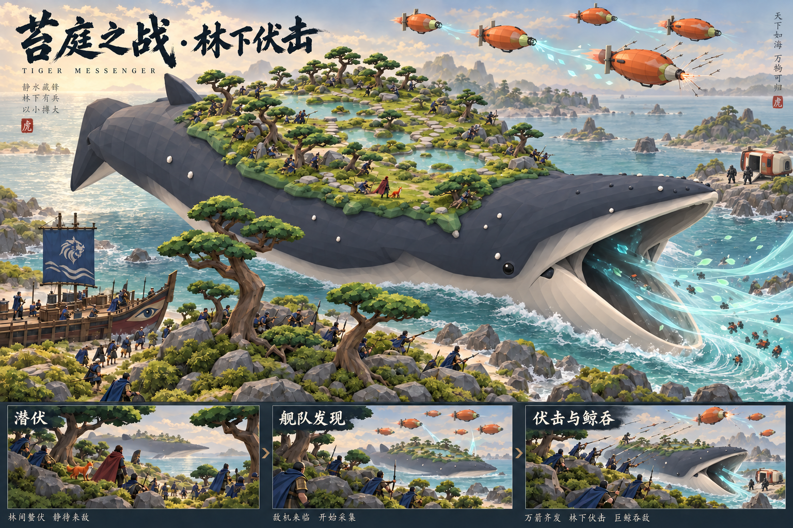

修正前

修正后

导出脚本曾使用半径161，实际原游戏为160。现统一读取原游戏常量，修正8棵松树明显错位；25棵松树的变换已核对一致。下方为同一Godot场景、同机位实际渲染，不是生成图。
尚未完成：50名士兵仍使用岸边战斗路线。低枝净空、鲲背登岛与返船还未通过；本次布局同步不能当作完整迁移或目标美术验收。鲲体及林下仍偏暗。

概念图；本轮只修复两端布局参数，不声称整体画面已经达到目标。
这是修正前布局中的实兵近景，用于定位问题。原粗筛与精查证据均保留；涉及已移动树木的候选必须在新布局重新验证，不能套用旧的“通过”结果。